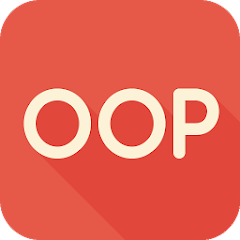

Hola, soy Mabel San Román.
Tengo 23 años y soy filóloga inglesa de formación. Mi pasión por la lengua inglesa me llevó a trabajar como profesora en varias academias, donde he disfrutado enseñando a otros.
Sin embargo, después de explorar otras opciones, decidí dar un giro a mi carrera y me embarqué en un bootcamp de desarrollo web y móvil. Ahora, estoy emocionada por aprender y crecer en el mundo de la programación.
En esta página encontrarás más información sobre mí y cómo puedes contactar conmigo. ¡Gracias por visitar mi sitio!
Mi descripción
Como mencioné antes, soy filóloga inglesa convertida en una entusiasta desarrolladora web y móvil. Me encanta enfrentar nuevos desafíos y estoy emocionada por aprender más sobre programación.
Durante mi carrera académica, profundicé en el estudio de la lengua inglesa y adquirí habilidades analíticas y de investigación que me han resultado valiosas en mi trayectoria como profesora de inglés y ahora como desarrolladora web.
Descubrí que mis conocimientos en inglés no solo me permiten comunicarme fluidamente con personas de diferentes partes del mundo, sino que también me abren un mundo de posibilidades en el campo de la programación.
Gracias a mi dominio del inglés, puedo acceder y entender fácilmente la abundante documentación técnica que existe en este idioma, lo que me facilita aprender nuevas tecnologías y enriquecer mis habilidades como desarrolladora.
Me encantaría seguir explorando el mundo de la programación, combinando mis habilidades en inglés con mi pasión por la tecnología para crear soluciones creativas y significativas.
Tecnologías
Front
 HTML
HTML
CSS
JavaScript
Bootstrap
 jQuery
jQuery
Media Queries
Back
 Node.js
Node.js
JavaScript
 TypeScript
TypeScript
 POO
Apoyo
 Git
Git
 GitHub
GitHub
Mis proyectos
Este repositorio contiene los retos de Maquetación. Las tecnologías usadas son principalmente HTML, CSS y JavaScript.
Aquí encontrarás un trabajo en equipo. Se trata de una base de datos que almacena películas, actores, directores y todas sus características. Usamos TypeScript, JavaScript, JSON y Node.js.
Estos son retos hechos con JavaScript y Typescript. Se basan en asentar los conocimientos aprendidos del primer módulo, desde lo más básico a lo más complicado. Usé JavaScript y TypeScript.
Proyectos realizados con TypeScript y JavaScript. Su objetivo es practicar la POO.